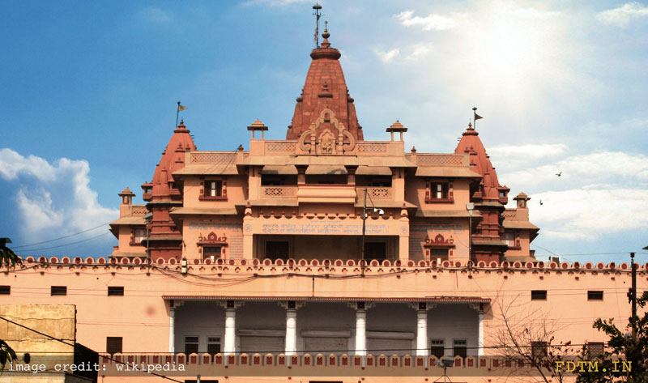
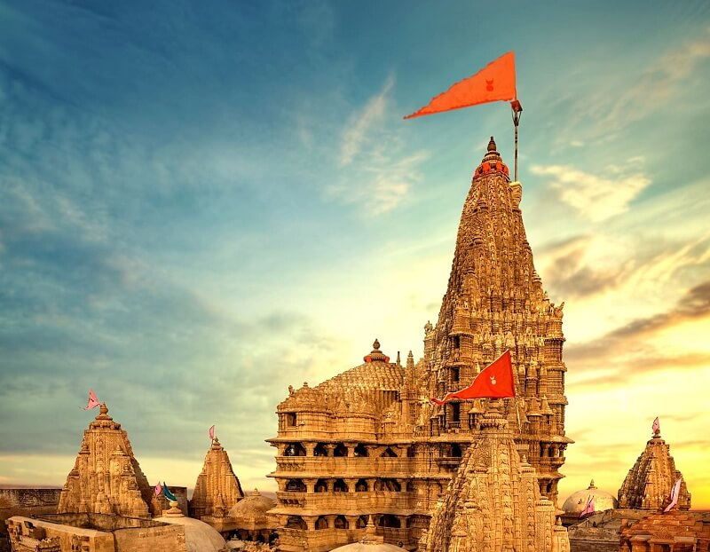
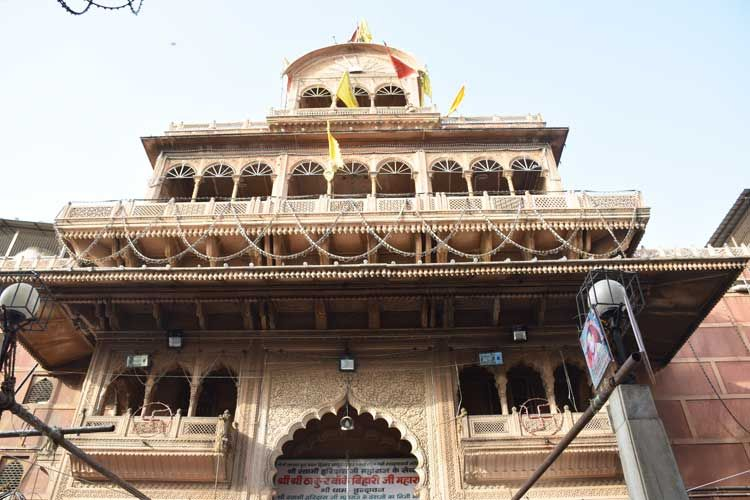
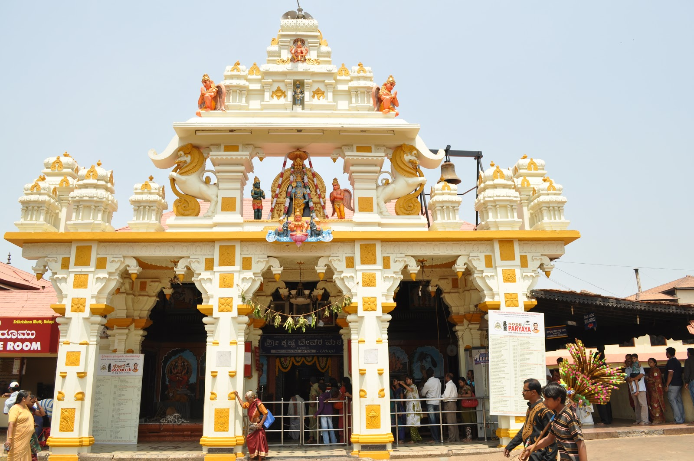
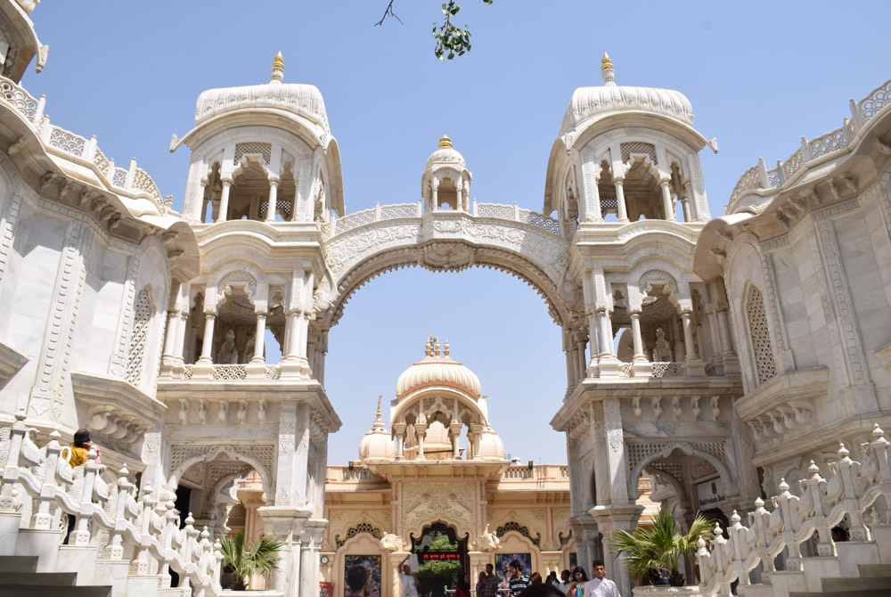
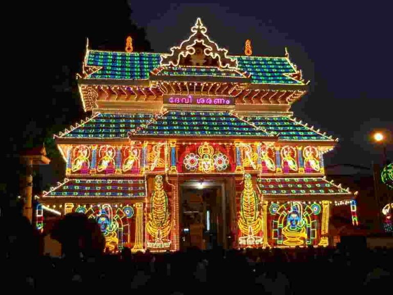

Shree Krishna Janmabhoomi Temple (Mathura, Uttar Pradesh)
at the believed birthplace of Lord Krishna, this temple holds immense spiritual significance. Mathura is considered Krishna’s hometown.
LocationPrem Mandir (Vrindavan, Uttar Pradesh)

elatively new and beautifully constructed temple, it depicts the life of Krishna and Radha in its architecture and showcases intricate carvings of Krishna's pastimes.
LocationDwarkadhish Temple (Dwarka, Gujarat)
Located in the ancient city of Dwarka, this temple is one of the four Char Dham pilgrimage sites. It is dedicated to Krishna as the King of Dwarka.
LocationBanke Bihari Temple (Vrindavan, Uttar Pradesh)
Located in the town where Krishna spent his childhood, this temple is famous for the playful and childlike form of Krishna (Banke Bihari) worshiped here.
LocationUdupi Sri Krishna Matha (Karnataka)
Founded by the saint Madhvacharya, this temple is renowned for its worship of Lord Krishna as a child. The deity is worshipped through a window known as Kanakana Kindi.
LocationISKCON Temples (Worldwide)
The International Society for Krishna Consciousness (ISKCON) has built many temples worldwide, promoting the worship of Krishna and the teachings of the Bhagavad Gita. Notable ISKCON temples include those in Mayapur, Vrindavan, and Bangalore.
LocationGuruvayur Temple (Kerala)
One of the most important temples in South India, dedicated to Guruvayurappan, a form of Lord Krishna as a child.
LocationJagannath Temple (Puri, Odisha)

Although dedicated to Jagannath, a form of Krishna, it is one of the four major pilgrimage sites in India. The annual Rath Yatra (chariot festival) is world-famous.
Location